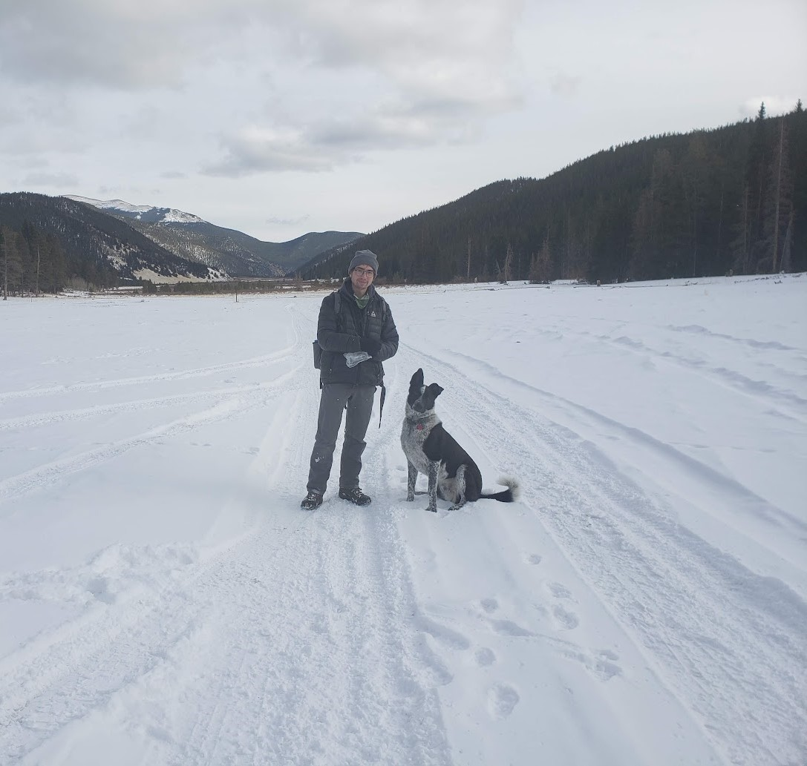
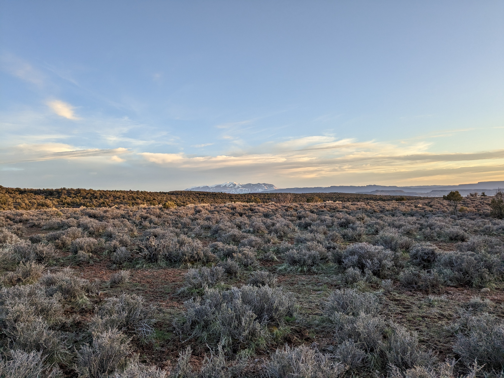
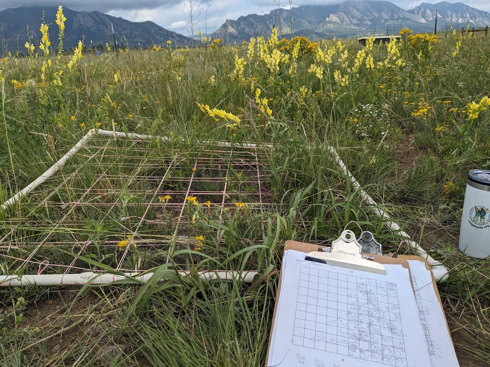
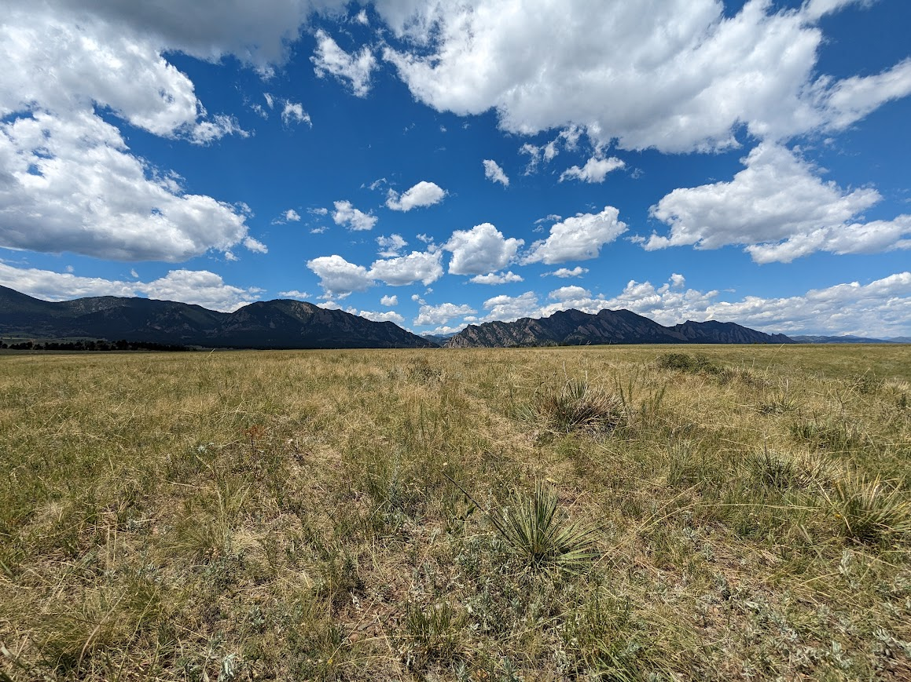
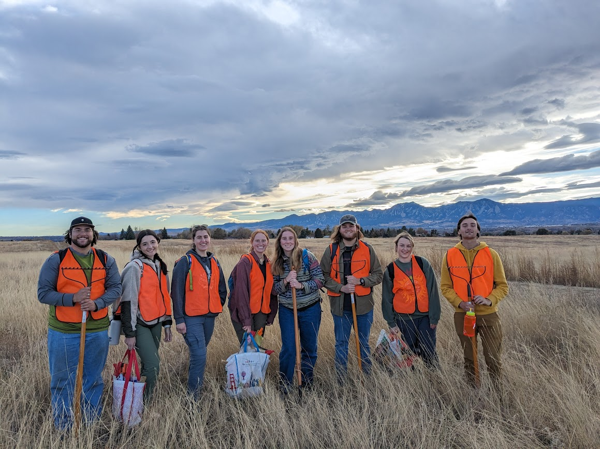

Fire is rapidly altering the historical sagebrush steppe ecosystem of the northern Great Basin. At the same time climate projections predict an increase in precipitation variability. However, we currently have a limited understanding of of how these two drivers will interact with each other. In this project I used satellite-based gridded datasets to assess how fire alters the relationship between net primary production and precipitation across a swath of northern Nevada. We found that as fire converts sagebrush ecosystems to annual grass dominated systems the senstivity of production to precipitation changes, leading to for more inter-annual fluctuations in production. Importantly, these increased primary production fluctionations have the potential to increase fire hazard particularly under and increasingly variable precipitation regime.

Droughts are becoming increasingly frequent and severe. I use a variety of experimental approaches to ask how droughts will affect plant communities and ecosystem funtioning. One question I am particularly interested in is how the spatial arrangement of communities interacts with drought through effects on plant demography. I am also interested in the effects of intra-season extreme droughts, or extended periods without preciptiation.

Historically, the Great Plains has been characterized by both grazing and fire. This history may have shaped the strategies of plant in these grassland communities. In this project we are quantifying grassland traits related to flammability and grazing. We aim to test whether there is a trade off in traits such that some species have fire adaptive strategies while others are adapted to grazing. Collaborators: Sam Ahler, Jon Henn, Advyth Ramachandran
